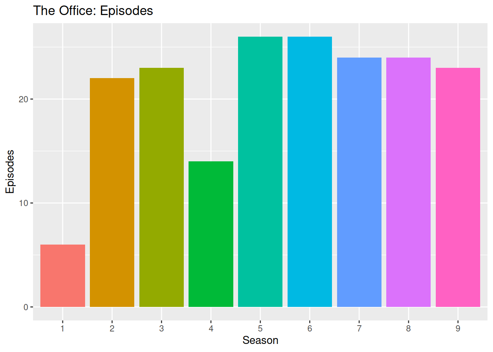
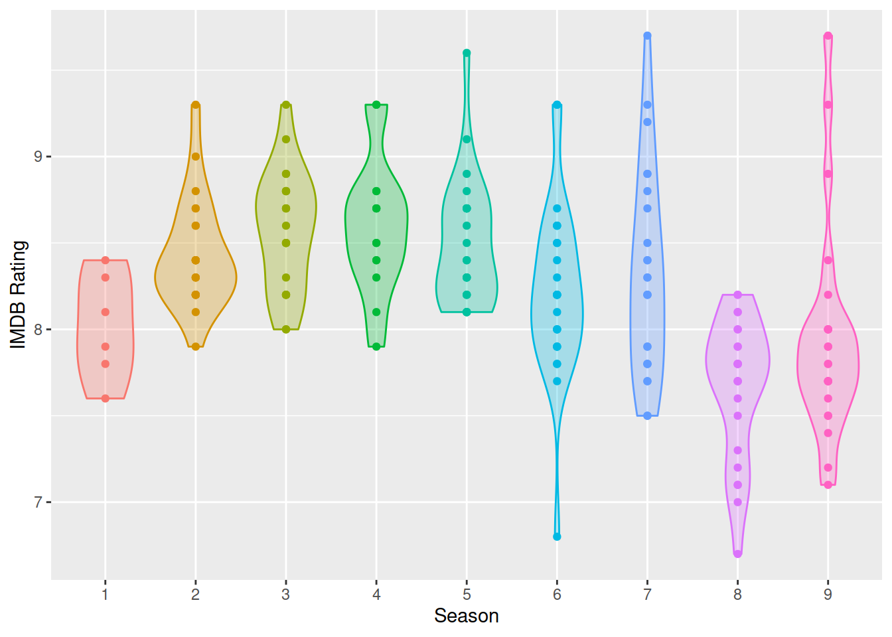
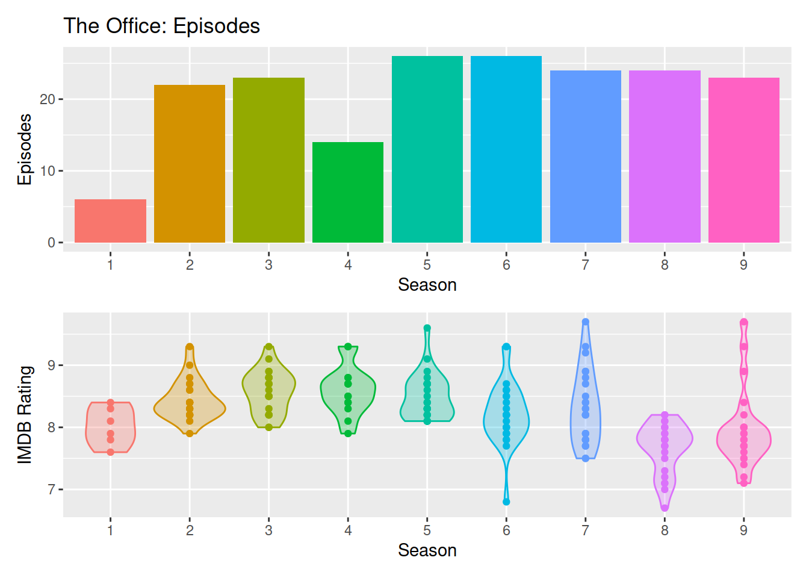
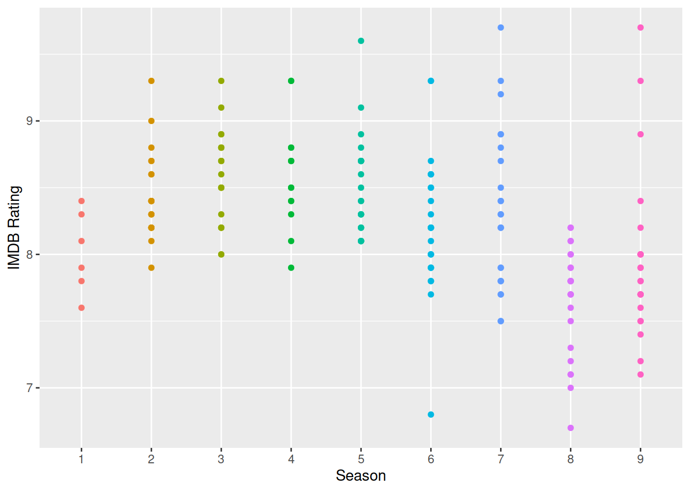
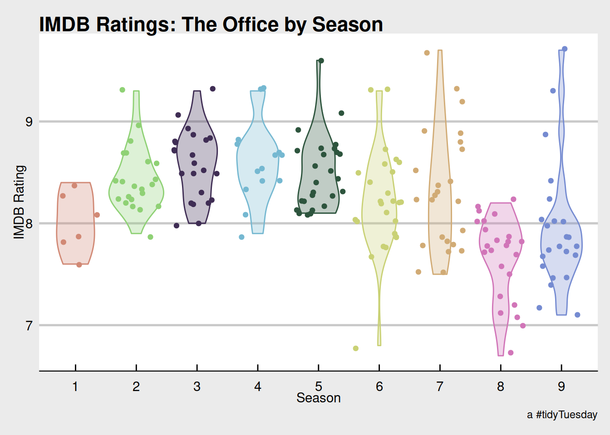

library(tidyverse)
office_ratings <- readr::read_csv('https://raw.githubusercontent.com/rfordatascience/tidytuesday/master/data/2020/2020-03-17/office_ratings.csv')The number of episodes for the Office by season.
library(janitor)
TableS <- office_ratings %>% tabyl(season)
p1 <- TableS %>% ggplot(., aes(x=as.factor(season), y=n, fill=as.factor(season))) + geom_col() + labs(x="Season", y="Episodes", title="The Office: Episodes") + guides(fill=FALSE)
p1
How are the various seasons and episodes rated?
p2 <- office_ratings %>% ggplot(., aes(x=as.factor(season), y=imdb_rating, fill=as.factor(season), color=as.factor(season))) + geom_violin(alpha=0.3) + guides(fill=FALSE, color=FALSE) + labs(x="Season", y="IMDB Rating") + geom_point()
p2
Using patchwork, we can combine multiple plots.
library(patchwork)
(p1) / p2
Let’s show the episode names. The tooltip doesn’t interact well with the violin plot. It needs points by themselves.
library(widgetframe)
p3 <- office_ratings %>% ggplot(., aes(x=as.factor(season), y=imdb_rating, fill=as.factor(season), color=as.factor(season), text=title)) + geom_point() + guides(fill=FALSE, color=FALSE) + labs(x="Season", y="IMDB Rating")
# The violin was trashing the tooltip. I have to get rid of it.
library(plotly)
# ggplotly(p3, tooltip = "text")
p3
A better and more customized version of the violin plot.
library(hrbrthemes); library(ggthemes)## NOTE: Either Arial Narrow or Roboto Condensed fonts are required to use these themes.## Please use hrbrthemes::import_roboto_condensed() to install Roboto Condensed and## if Arial Narrow is not on your system, please see https://bit.ly/arialnarrowggplot(office_ratings, aes(x=as.factor(season), y=imdb_rating, fill=as.factor(season), color=as.factor(season))) + geom_violin(alpha=0.3) + guides(fill=FALSE, color=FALSE) + labs(x="Season", y="IMDB Rating", title="IMDB Ratings: The Office by Season", caption="a #tidyTuesday") + theme_economist_white() + scale_fill_ipsum() + scale_color_ipsum() + geom_jitter()
ggplotly does not love multiple geoms. In this case, the lines are ignored but the tool tip works.
p4 <- ggplot(office_ratings, aes(x=air_date, y=imdb_rating, color=as.factor(season), text=title)) + geom_point() + geom_smooth() + guides(color=FALSE) + labs(x="Date Aired", y="IMDB Rating")
# The tooltip kills the smooth.
p5 <- ggplotly(p4)## `geom_smooth()` using method = 'loess' and formula 'y ~ x'htmlwidgets::saveWidget(
widgetframe::frameableWidget(p5), here:::here('static/img/widgets/ttop5map.html'))